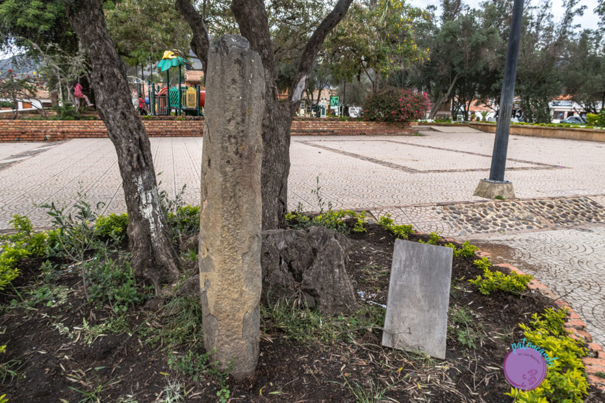
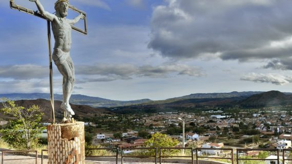
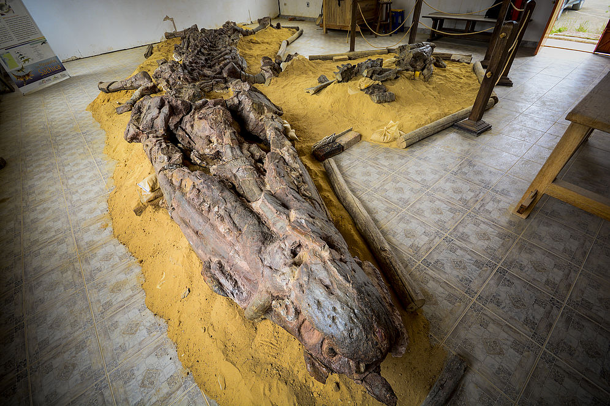
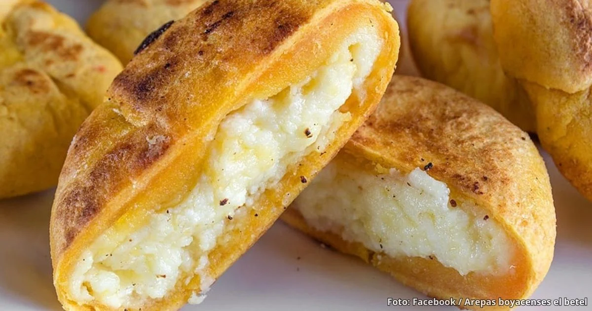
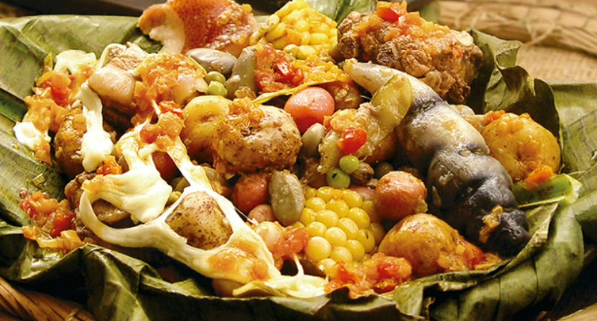
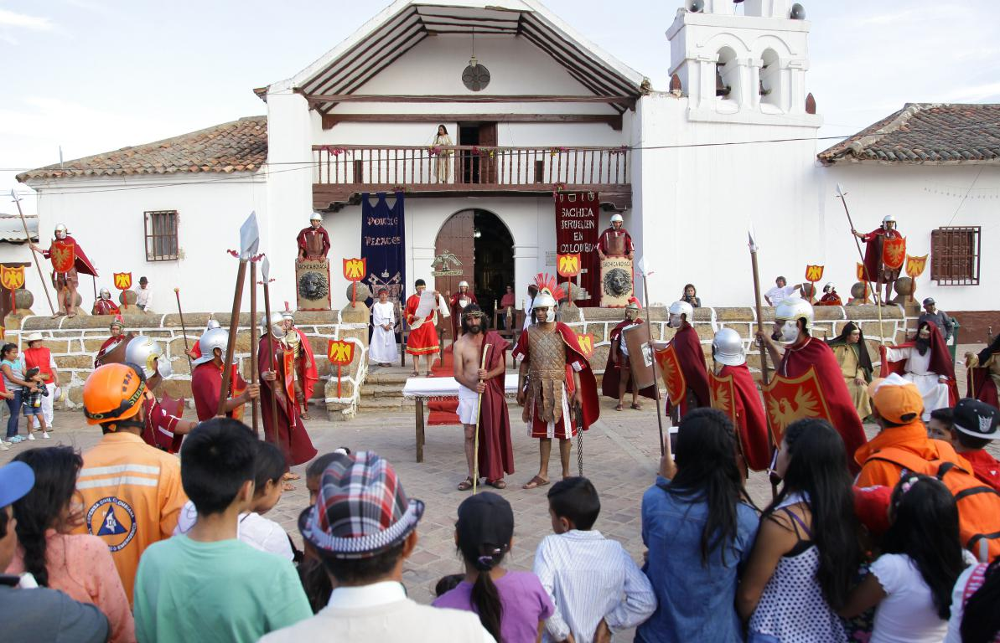
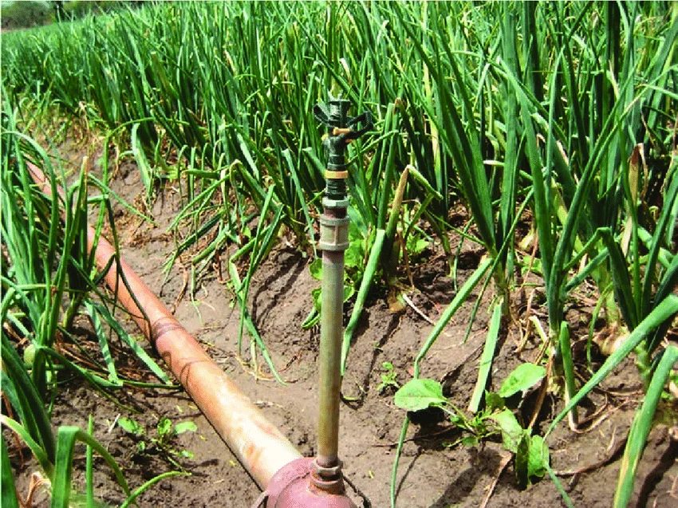
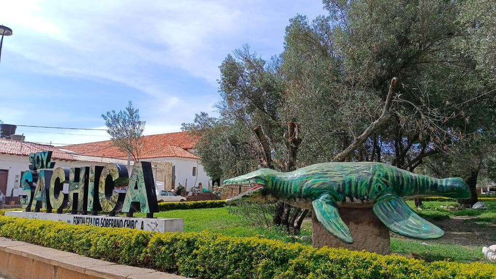
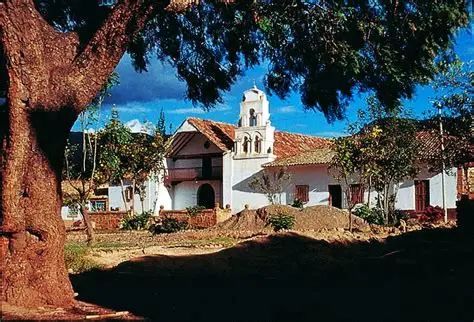
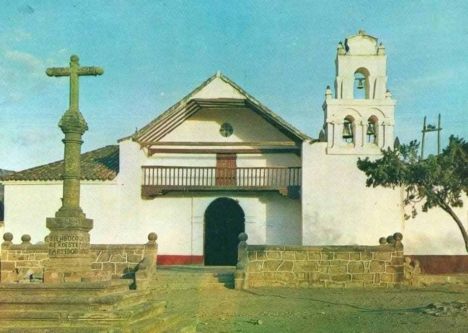

DESTINO TURÍSTICO
Descubre Sáchica
Historia, cultura, patrimonio, gastronomía y naturaleza se unen en uno de los destinos del Alto Ricaurte.
COMENZAR REVISTA
Historia, cultura, patrimonio, gastronomía y naturaleza se unen en uno de los destinos del Alto Ricaurte.
COMENZAR REVISTA
Bienvenido a esta revista turística dedicada a mostrar la historia, las tradiciones, los paisajes y los lugares que hacen de Sáchica un destino especial de Boyacá.
El propósito es ofrecer una guía atractiva y sencilla para habitantes y visitantes, mostrando información útil para conocer y recorrer el municipio.
Encontrarás información sobre ubicación, historia, clima, atractivos turísticos, gastronomía, cultura, actividades, alojamiento y recomendaciones.
VER CONTENIDOSelecciona una sección para ir directamente a la información que quieres conocer.
Ubicación, mapa, cercanías, historia, clima y territorio.
Lugares turísticos de Sáchica y otros destinos de la región.
Caminatas, cabalgatas, cultura y aventura.
Comidas tradicionales de Sáchica y Boyacá.
Fiestas, música, festivales y tradiciones.
Consejos para organizar y disfrutar el viaje.
Hoteles y servicios disponibles en Sáchica.
Sáchica y la región a través de imágenes.
Una guía para conocer dónde está, cómo llegar, qué clima tiene y qué caracteriza su territorio.
Sáchica se encuentra en Colombia, en el departamento de Boyacá y forma parte de la provincia de Ricaurte.
Colombia
Boyacá
Sáchica
Ricaurte
Uno de los destinos turísticos más conocidos de Boyacá, famoso por su arquitectura colonial.
Municipio reconocido por sus artesanías, cerámica y tradición alfarera.
Municipio vecino que hace parte de los recorridos turísticos del Alto Ricaurte.
Destino cercano con paisajes, artesanías y diferentes atractivos turísticos.
Capital del departamento de Boyacá y principal centro urbano de la región.
La principal forma de llegar a Sáchica es por carretera, conectándose con diferentes municipios de Boyacá.
Es posible realizar el recorrido en transporte público o vehículo particular.
Consulta el estado de las vías, horarios de transporte y condiciones climáticas.
Sáchica se encuentra en una zona de Boyacá caracterizada por clima seco, vegetación de pastos, arbustos y matorrales.
Es recomendable llevar ropa cómoda, protección solar, agua y una prenda adicional para los cambios de temperatura.

El origen de Sáchica es anterior a la conquista española. El territorio fue habitado por comunidades indígenas muiscas.
Durante el periodo colonial se establecieron doctrinas religiosas y se construyeron elementos que actualmente hacen parte del patrimonio histórico.
El Templo Doctrinero, la Cruz Atrial, la Piedra del Castigo y las pinturas rupestres mantienen vivo parte del pasado del municipio.
En buena parte del territorio predominan terrenos quebrados, montañosos y sectores escarpados.
Las partes bajas presentan áreas más planas y ligeramente onduladas utilizadas para actividades rurales.
La aridez y vegetación crean un paisaje muy particular de esta zona de Boyacá.
El río Sáchica y varias quebradas forman parte de la hidrografía del municipio.
Montañas, zonas rurales y vegetación hacen parte del paisaje local.
Su templo, cruz atrial y otros elementos históricos permiten conocer parte de la historia regional.
Las pinturas rupestres ofrecen una conexión con culturas antiguas.
La región posee relación con fósiles, dinosaurios y patrimonio paleontológico.
La agricultura forma parte importante de la identidad municipal.
Para familias que buscan historia, gastronomía y espacios para conocer.
Para quienes disfrutan caminatas, paisajes y recorridos al aire libre.
Ideal para visitantes interesados en patrimonio, religión, historia y tradiciones.
Vacaciones, Semana Santa y fechas con festivales pueden aumentar la llegada de visitantes.
Fuera de las principales celebraciones se puede encontrar una experiencia más tranquila.
Los eventos culturales y gastronómicos son una oportunidad para conocer las tradiciones.
Servicios básicos de atención en salud.
Servicios para atención y seguridad.
Consulta opciones de retiro y pago.
La señal e internet pueden variar dependiendo del sector.
Sáchica conserva diferentes elementos históricos, arqueológicos y religiosos que permiten conocer parte de su pasado.
Las pinturas rupestres constituyen uno de los testimonios antiguos más importantes del territorio.
Utiliza prendas apropiadas para caminar y recorrer espacios turísticos.
Lleva bloqueador, gorra o sombrero.
Lleva agua especialmente durante caminatas.
No arrojes basura ni dañes espacios naturales.
No rayes ni alteres pinturas rupestres o monumentos.
Consulta horarios, clima y eventos.
Historia, arqueología, religión y prehistoria forman parte de los principales lugares para conocer.
PATRIMONIO
Construcción histórica relacionada con el proceso de evangelización durante la época colonial.
 ARQUEOLOGÍA
ARQUEOLOGÍA
Inscripciones y pictogramas antiguos ubicados en formaciones rocosas.

HISTORIAMonolito histórico conservado dentro del municipio.
 PATRIMONIO
PATRIMONIO
Cruz que hace parte del conjunto histórico y religioso del municipio.

RELIGIÓNSendero relacionado con peregrinación, tradición religiosa y paisaje.

PREHISTORIAExperiencias relacionadas con dinosaurios y la prehistoria regional.
La experiencia turística también se construye a través de actividades.
Recorre el municipio, sus calles, senderos y paisajes rurales.
Disfruta recorridos por sectores rurales y paisajes.
Conoce el templo, monumentos y lugares históricos.
Captura paisajes, arquitectura y detalles de los lugares visitados.
Conoce lugares arqueológicos, paisajes y recorridos de naturaleza.
Complementa el recorrido con experiencias de turismo rural.
La historia del destino también puede conocerse por medio de su gastronomía.

La gallina criolla es una preparación reconocida dentro de la gastronomía de la región.

Preparación tradicional reconocida por su sabor y tradición campesina.

Preparación tradicional dentro de la gastronomía regional.

Plato tradicional elaborado con productos de la agricultura andina.

Amasijo tradicional reconocido dentro de la gastronomía regional.
Fiestas, música, religión, agricultura y gastronomía forman parte de la identidad cultural.

Manifestación religiosa y cultural que reúne a habitantes y visitantes.

Expresión relacionada con las tradiciones religiosas y musicales.

Celebraciones que reconocen la importancia de la cebolla dentro de la identidad municipal.

Encuentro gastronómico relacionado con la preparación de la gallina criolla.

Expresión musical ligada a la ruralidad y cultura de Boyacá.
Opciones para complementar la visita al municipio.
Opción de alojamiento para visitantes de Sáchica.
Alternativa de alojamiento ubicada dentro del municipio.
Opción hotelera para disfrutar la visita.
Otra alternativa de hospedaje en la zona.
Diferentes establecimientos ofrecen gastronomía local y regional.
Información relacionada con recorridos y turismo por la región.
Una mirada visual a la historia, cultura y paisajes del municipio.





Descubre un territorio donde la historia, la cultura, los paisajes y la gastronomía cuentan una misma historia.
VOLVER AL INICIO